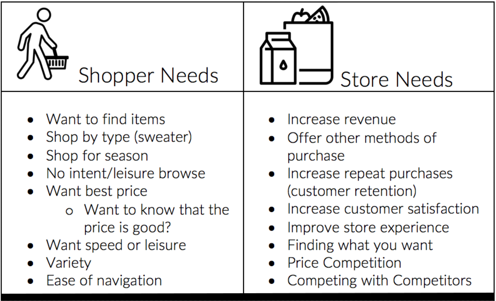
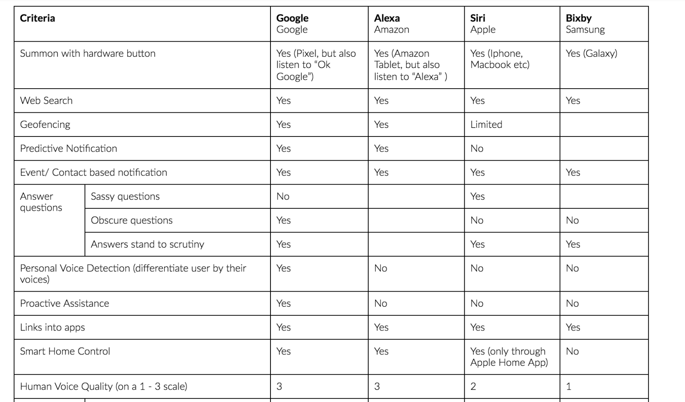
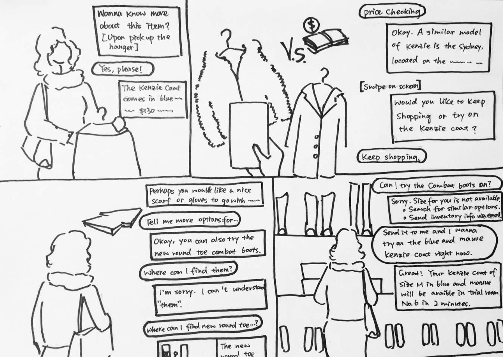
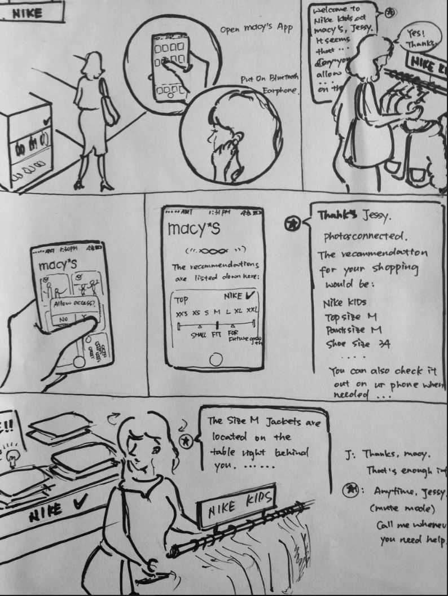
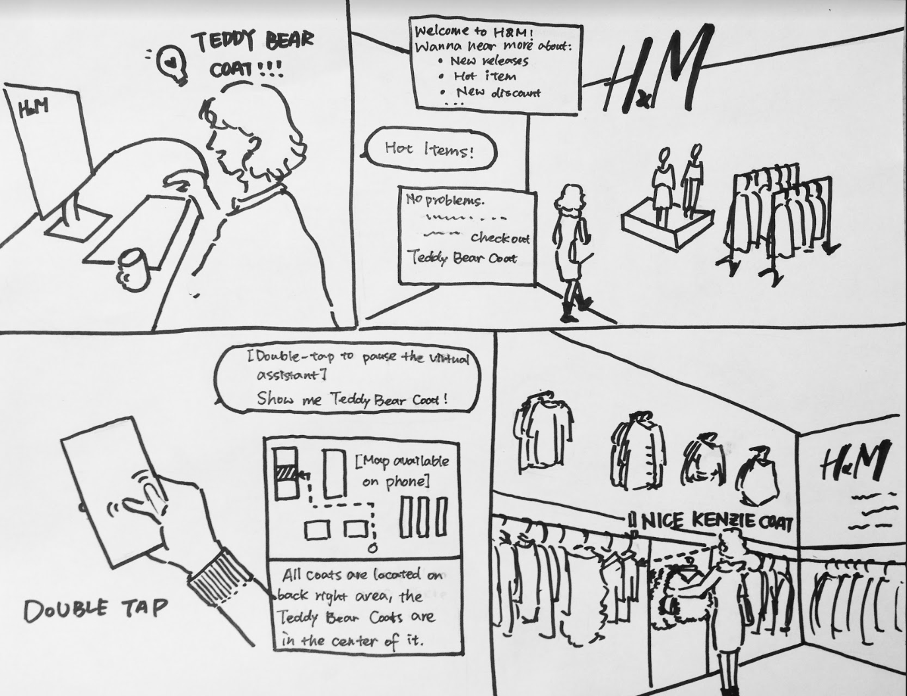
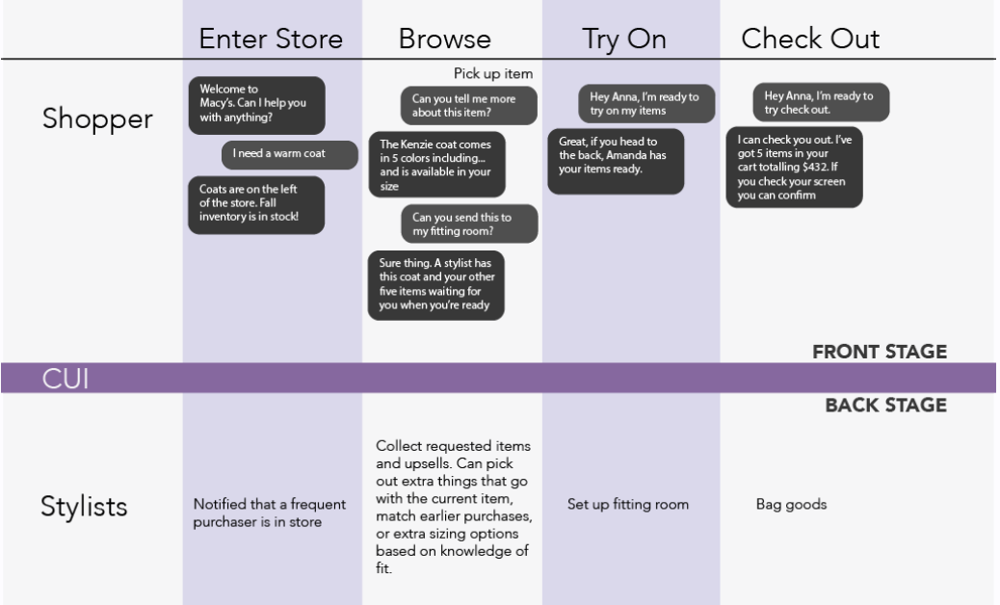
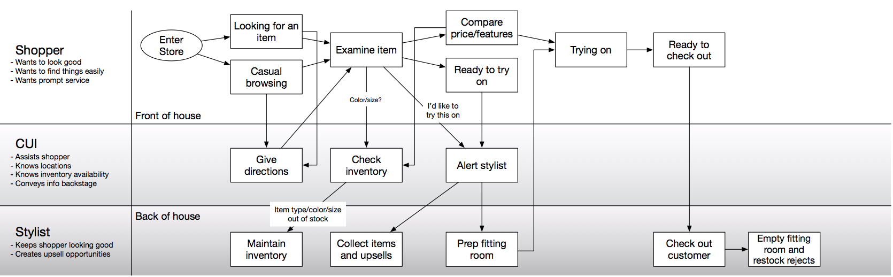

Timeline: Three Weeks My Role: Building the Model, Video Editing, Process Target User: Shoppers at Department Stores Key Methods: Video Editing, Model Creation, Think Alouds, Script Writing
For this project, our goal was to simplify the customer experience and allow them to better engage with store offerings. Our team chose to create Miranda, a conversational user interface that could personalize and elevate the shopping experience to become something more. We wanted to encourage shoppers to come out to stores, instead of hiding behind their screens as they shop online. MIRANDA can be used to both make the store process more streamlined: such as trying on clothes and figuring out what inventory is low and also making the customer feel more inspired by sending personalized recommendations and helping customers better navigate the stores through bluetooth connection.
Stakeholders
We conducted basic research on what kinds of key metrics store managers need to reach and what kinds of questions store customers may have. To writeup this set of questions and thoughts, we did a think aloud of our own shopping experiences and what we found to be difficult/key to the experience. Based on our analysis, there were a lot of things we needed to improve from the store and customer's perspective. We tried to repriotize our brainstorm to determine what features would be most desired to accomplish the goals on both ends.

Competitive Matrix for CUIs
After figuring out that we wanted to build a CUI for the retail experience, we looked at competitor products to identify priority features.

Honing in on Department Stores
We created scenarios for fast fashion, luxury stores, and department stores.



We discovered that were three main categories retails stores were a part of: fast fashion (stores with high turnovers, like Zara), department stores (like Macy's that catered to many different subgroups of people), and luxury fashion (like Balenciaga, where only the richest could afford to buy clothing). Realizing that the in-person experience is important to luxury fashion and fast fashion would be chaotic to implement through a conversational user interface, we decide to hone our services for department stores. Having a conversational user interface could really elevate the department store experience and create a much smoother shopping experience, given the volume of offerings department stores can have (albeit much more organized and less turnover than fast fashion stores).
Model text & Interaction

This is a depiction of how the CUI would interact with the customer and the store.

This is a tree diagram of potential routes the CUI could explore.
Process
This project was for Interaction Design Studio and took a total of three weeks. I learned a lot about interactivity, video, and conversational interfaces.